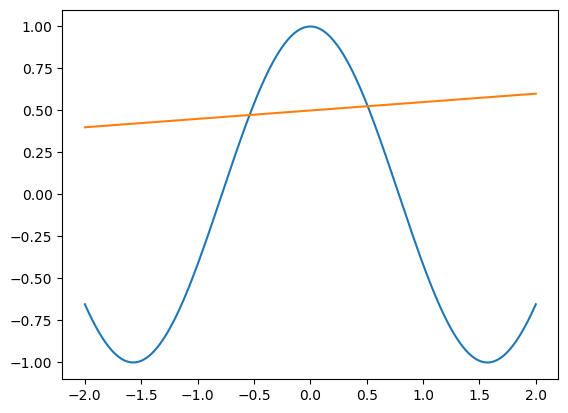
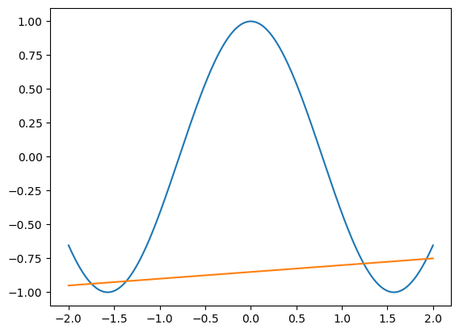

n = 1:100
an = 2*n -1 11wk-1: 중간고사 해설
R
1. 수열생성 – 15점
문항당 3점
문제의 조건에 맞는 수열을 100개 생성하라. 즉 \(a_1,a_2,\dots,a_{100}\)을 생성하라.
(1) \(a_n = 2n-1\)
(풀이)
(2) \(a_n=\frac{1}{n}\)
(풀이)
n = 1:100
an = 1/n(3) \(a_n = (1/2)^{n}\)
(풀이)
n = 1:100
an = (1/2)^n(4) \(a_n = \begin{cases} 0 & n=2,4,6,...,100 \\ (1/2)^n & n=1,3,5,7,\dots,99 \end{cases}\)
(풀이)
an = c()
for(n in 1:100){
if(n%%2 ==0){
an[n] =0
}else{
an[n] = (1/2)^n
}
}an[1:5][1] 0.50000 0.00000 0.12500 0.00000 0.03125(5) \(a_1=1, a_2=2\); \(a_n = a_{n-1} + a_{n-2} , n \geq 3\)
(풀이)
an = c(1,2)
for(n in 3:100){
an[n] = an[n-1] + an[n-2]
}
an[1:5][1] 1 2 3 5 82. 인덱싱 – 15점
문항당 3점
아래의 벡터를 고려하자.
set.seed(43052)
x = rnorm(100)
x [1] -0.724154332 -0.786807067 0.322143867 1.245215545 0.541298135
[6] 1.644425736 1.010839968 -0.041093855 0.566219689 0.322589945
[11] 0.744257098 1.318771443 1.741644032 -0.481877777 -0.212304360
[16] -0.038340064 -0.670476111 1.116346318 -1.017367268 -2.764108407
[21] -1.691021535 -0.286386675 -0.293329723 -0.439574695 1.187215542
[26] 0.619075484 1.725469680 0.387946245 2.014429677 -1.858183602
[31] 0.475627218 -1.522483833 -1.221104431 0.526176114 0.300794693
[36] 0.419955219 0.774111400 1.118417590 -0.003518173 -1.339826327
[41] 0.689804767 1.241655279 0.540903204 -0.090689478 0.899004061
[46] 0.277964244 0.102093035 0.026743749 -1.366798404 1.725945031
[51] 0.016568963 2.435175155 0.660768741 0.586336164 0.915387917
[56] 1.032858015 0.487488367 0.983191955 -1.672555500 -2.391719134
[61] -0.653742759 1.169355804 1.187078729 -1.099769071 0.175000573
[66] -1.806541369 1.137909229 -0.041377066 1.669815049 1.063072588
[71] 1.590954249 -1.385275254 1.108154509 1.154914467 -2.167338566
[76] -0.174894345 1.213979381 0.722172855 -1.839824680 1.565277416
[81] 0.883058660 -0.193202697 -0.805387640 0.115174290 -1.419227107
[86] -1.347685370 0.338432430 -1.511701575 -0.969561843 1.854438960
[91] -0.376556809 1.228923415 -1.326004497 -0.608823772 0.424967512
[96] 1.027977993 0.143027357 1.539912811 -2.705749561 -2.271813360(1) 양수인 원소의 갯수를 count하라.
(풀이)
sum(x>0)[1] 59(2) 양수인 원소의 합과 음수인 원소의 합을 구하라. 두 값의 절대값은 어느쪽이 더 큰가?
(풀이)
sum(x[x>0])[1] 54.05846sum(x[x<0])[1] -43.6182(3) \(-0.2 <x <0.1\)의 범위에 있는 원소의 수를 count 하라.
(풀이)
y = x[x > -0.2]sum(y<0.1)[1] 9(4) 0.5와 가장 가까운 원소를 출력하라 .
(풀이)
which.min(abs(x- 0.5))[1] 57x[57][1] 0.4874884(5) 평균과 가장 멀리있는 원소를 출력하라.
(풀이)
which.max(abs(x- mean(x)))[1] 20x[20][1] -2.7641083. Matrix – 20점
문항당 5점
아래의 matrix를 고려하자.
X = rnorm(200);
dim(X) = c(20,10)(1) 열별로 양수를 count하라.
(풀이)
a = c()
for(j in 1:10){
a[j] = sum(X[,j] > 0)
}
a [1] 12 12 7 13 11 8 8 11 9 10(2) 가장 많은 숫자의 양수를 보유한 열은?
which.max(a)[1] 4(3) 행별로 최대값과 최소값을 구하라.
(풀이)
a = c()
b = c()
for(i in 1:20){
a[i] = max(X[i,])
b[i] = min(X[i,])
}a [1] 2.0782276 0.9765560 1.4556490 1.5831809 0.7072966 2.0459338 1.2332443
[8] 1.5590517 1.0431770 1.7608914 1.8330603 1.0409267 2.3305497 2.2062090
[15] 0.7724140 2.4259680 1.1632968 1.4911815 0.9195254 1.1524438b [1] -0.9063185 -2.2019410 -1.2226595 -2.1306331 -2.0470883 -1.7249115
[7] -0.8926343 -2.7928363 -1.2140910 -1.7602147 -1.0219255 -1.6810861
[13] -1.8325957 -1.3256536 -2.2049965 -1.4324366 -2.0865996 -0.8459714
[19] -1.2273253 -1.3226180(4) 최대값과 최소값이 차이가 가장 큰 행은?
(풀이)
which.max(a-b)[1] 8Python
import numpy as np
import matplotlib.pyplot as pltMatplotlib is building the font cache; this may take a moment.1. 기본문법 – 10점
(1) 아래와 같이 두 변수 a,b에 값이 저장되어있다. 두 값을 임시변수 없이 교환하라. – 2점
a = 1
b = 2(풀이)
b,a = a,b a,b(2, 1)(2) 컴프리헨션을 이용하여 아래와 같은 수열을 생성하라. – 2점
\[x_n = [3,6,9,\dots,30]\]
(풀이)
x = [3*n for n in range(1,11)]
x[3, 6, 9, 12, 15, 18, 21, 24, 27, 30](3) 짝수가 입력으로오면 “짝수” 를 리턴하고 홀수가 입력으로 오면 “홀수”를 리턴하는 함수를 구현하라. 아래는 구현된 함수를 사용한 예시이다. – 2점
(풀이)
func = lambda x: "짝수" if x%2==0 else "홀수"def func(x):
return "짝수" if x%2==0 else "홀수"def func(x):
if x%2 ==0:
return "짝수"
else:
return "홀수"func(2)'짝수'func(3)'홀수'(4) (2)에서 만든 \(x_n\)에 (3)의 함수를 적용하여 각 원소가 짝수인지 홀수인지 판단한뒤 그 결과를 아래와 같은 리스트로 만들어라. – 2점
['홀수', '짝수', '홀수', '짝수', '홀수', '짝수', '홀수', '짝수', '홀수', '짝수']['홀수', '짝수', '홀수', '짝수', '홀수', '짝수', '홀수', '짝수', '홀수', '짝수'](풀이)
[func(xi) for xi in x]['홀수', '짝수', '홀수', '짝수', '홀수', '짝수', '홀수', '짝수', '홀수', '짝수'](5) 아래와 같은 array가 있다고 하자. – 2점
x = np.random.randn(100)
y = np.random.randn(100)\(x_i > y_i\) 를 만족하는 원소는 몇개있는가?
(풀이)
sum(x > y)np.int32(56)(x>y).sum()np.int32(56)np.sum(x>y)np.int32(56)2. 겹쳐서 그리기 – 10점
(1) \(-2<x<2\) 에서 \(\cos(2x)\) 의 그래프와 \(\frac{1}{20}x+0.5\)의 그래프를 겹쳐 그려라. 교점의 수가 몇개인가? – 2점
(풀이)
x = np.linspace(-2,2,1001)
plt.plot(x,np.cos(2*x))
plt.plot(x,1/20*x + 0.5)
(2) \(-2<x<2\) 에서 \(\cos(2x)\) 의 그래프와 \(\frac{1}{20}x+k\)의 그래프를 겹쳐 그렸을때 두 그래프가 많은 교점을 같도록 상수 \(k\)의 값을 적절히 선택하라. (“교점의 수$$2” 를 점수로 인정, 최대 8점까지 획득가능) – 8점
(풀이)
x = np.linspace(-2,2,1001)
plt.plot(x,np.cos(2*x))
plt.plot(x,1/20*x - 0.85)
#
3. Oxford-III – 30점
(1), (2) 를 풀지않고 바로 (3)만 풀어도 정답으로 인정함
Oxford-III: // reference
아래는 이미지 파일명을 불러오는 코드이다.
import requests
url = 'https://raw.githubusercontent.com/guebin/PP2023/main/posts/01_PythonBasic/Oxford-IIIT.txt'
txt = requests.get(url).content.decode()
flist = txt.split()flist[:10]['Abyssinian_1.jpg',
'Abyssinian_10.jpg',
'Abyssinian_100.jpg',
'Abyssinian_100.mat',
'Abyssinian_101.jpg',
'Abyssinian_101.mat',
'Abyssinian_102.jpg',
'Abyssinian_102.mat',
'Abyssinian_103.jpg',
'Abyssinian_104.jpg'](1) 각 이미지파일명은 아래와 같은 규칙으로 저장되어 있다. – 10점
- 파일명의 첫글자가 대문자이면 고양이를 의미하고 첫글자가 소문자이면 강아지를 의미한다.
이와 같은 규칙을 명확하게 하기 위하여 고양이일 경우 앞에 파일명의 앞에 “고양이_” 를 붙이고 강아지일 경우 “강아지_”를 붙이고 싶다. 이를 구현하는 코드를 작성하라.
(풀이)
def func(fname):
if fname[0].isupper():
return "고양이_"+fname
else:
return "강아지_"+fname
flist = [func(fname) for fname in flist]
flist[:5]['고양이_Abyssinian_1.jpg',
'고양이_Abyssinian_10.jpg',
'고양이_Abyssinian_100.jpg',
'고양이_Abyssinian_100.mat',
'고양이_Abyssinian_101.jpg'](2) 아래의 딕셔너리를 이용하여 (1)에서 얻은 리스트의 각 원소에 해당하는 종의 이름을 한글로 바꾸는 함수를 구현하라. – 10점
breed_ko_dict = {
'Abyssinian': '아비시니안',
'Bengal': '벵갈',
'Birman': '버만',
'Bombay': '봄베이',
'British_Shorthair': '브리티시쇼트헤어',
'Egyptian_Mau': '이집션마우',
'Maine_Coon': '메인쿤',
'Persian': '페르시안',
'Ragdoll': '랙돌',
'Russian_Blue': '러시안블루',
'Siamese': '샴',
'Sphynx': '스핑크스',
'american_bulldog': '아메리칸불도그',
'american_pit_bull_terrier': '아메리칸핏불테리어',
'basset_hound': '바셋하운드',
'beagle': '비글',
'boxer': '복서',
'chihuahua': '치와와',
'english_cocker_spaniel': '잉글리시코커스패니얼',
'english_setter': '잉글리시세터',
'german_shorthaired': '저먼쇼트헤어드포인터',
'great_pyrenees': '그레이트피레니즈',
'havanese': '하바니즈',
'japanese_chin': '재패니즈친',
'keeshond': '키스혼드',
'leonberger': '레온버거',
'miniature_pinscher': '미니어처핀셔',
'newfoundland': '뉴펀들랜드',
'pomeranian': '포메라니안',
'pug': '퍼그',
'saint_bernard': '세인트버나드',
'samoyed': '사모예드',
'scottish_terrier': '스코티시테리어',
'shiba_inu': '시바이누',
'staffordshire_bull_terrier': '스태퍼드셔불테리어',
'wheaten_terrier': '휘튼테리어',
'yorkshire_terrier': '요크셔테리어'
}구현예시는 아래와 같다.
# 출력예시1
func('강아지_scottish_terrier_98.jpg')'강아지_스코티시테리어_98.jpg'# 출력예시2
func('고양이_British_Shorthair_97.jpg')'고양이_브리티시쇼트헤어_97.jpg'(풀이)
def func(fname):
fname_list = fname.split("_")
head = fname_list[0]
tail = fname_list[-1]
body = "_".join(fname_list[1:][:-1])
body_kor = breed_ko_dict[body]
return head + "_" + body_kor + "_" + tailfunc('강아지_scottish_terrier_98.jpg')'강아지_스코티시테리어_98.jpg'(3) (2)에서 구현한 함수를 이용하여 flist의 모든 원소를 바꾸어라.
(풀이)
[func(fname) for fname in flist][:5]['고양이_아비시니안_1.jpg',
'고양이_아비시니안_10.jpg',
'고양이_아비시니안_100.jpg',
'고양이_아비시니안_100.mat',
'고양이_아비시니안_101.jpg']